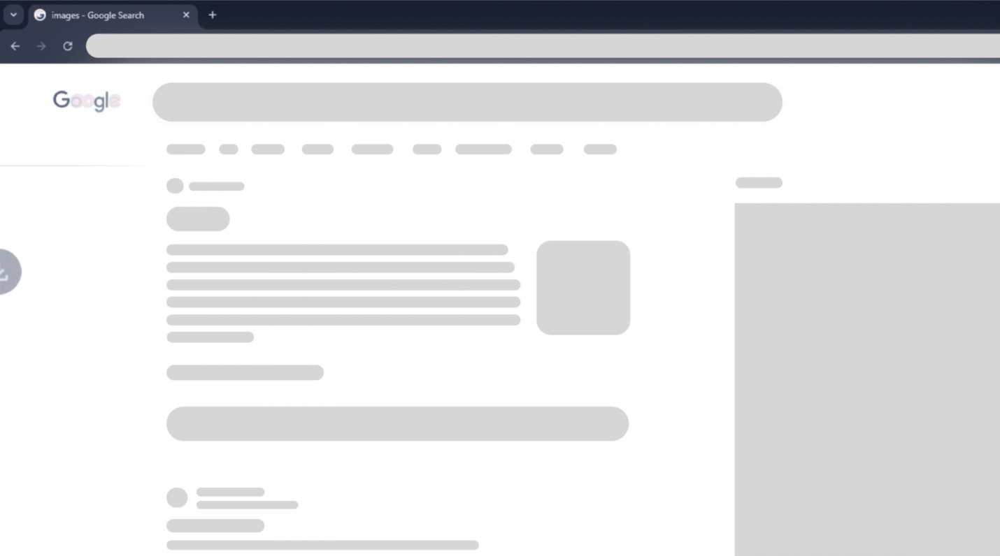
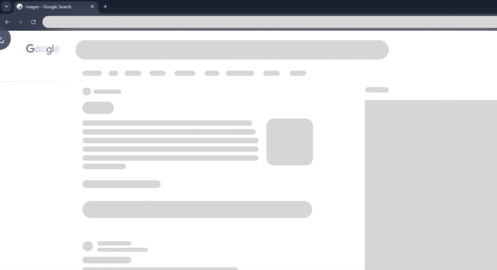
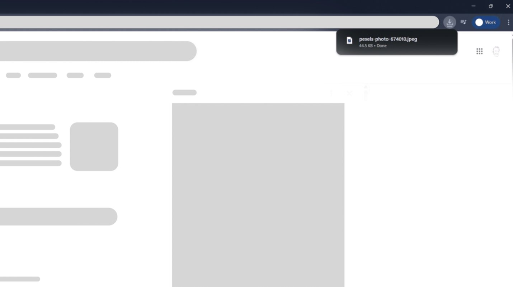
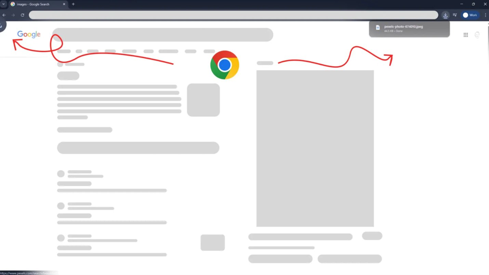

The Moment I Noticed the Problem
I was downloading a file, something I've done thousands of times. No thinking, no effort. Muscle memory.
I clicked Download.

The browser before the download — a familiar, clean state
An animation appeared at the bottom-left, moving upward. My eyes followed it instinctively.
I waited. Nothing was there.
For a split second, I thought: "Did it actually download?"

The animation appears at the bottom-left — eyes follow it upward, expecting the file to land there
Then I noticed the Downloads icon at the top-right showing activity. The file was already there.

But the confirmation appeared top-right — the opposite end of where attention was pulled
The task was complete, but my confidence in the system briefly wasn't.
Did you notice the same issue when Chrome had been idle for a while or during your first download?

The contradiction: animation pulls attention left → confirmation lands right. A small spatial mismatch with real cognitive cost.
Why This Moment Stood Out to Me
As a UX designer, I'm sensitive to micro-friction, especially in mature products.
This was a misleading micro-interaction. The animation told one story. The interface completed another.
What My Brain Expected (Mental Model)
Based on years of browser usage, my brain expected:
Mental model vs Reality
UX Principles I Realized Were Breaking
This moment reminded me:
Good UX isn't about adding motion. It's about preserving understanding.
When micro-interactions contradict system behavior, they stop being helpful and start being misleading.
Micro-interactions should close the loop, not open questions.